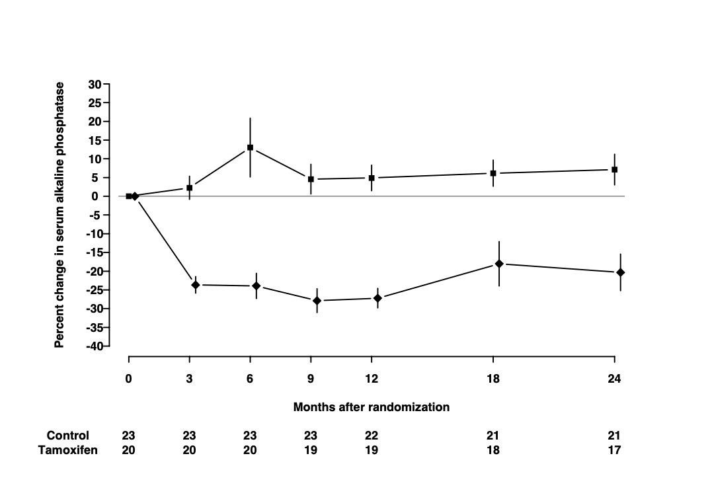

Chapter 10 Graphics meccano
The plot below is from a randomized study of the effect of Tamoxifen treatment on bone mineral metabolism, in a group of patients who were treated for breast cancer.

The data are available in the file alkfos.csv (using comma as
separator, so read.csv will read it).
The purpose of this exercise is to show you how to build a similar
graph using base graphics in R. This will take you through a number of
fundamental techniques. The exercise will also walk you through
creating the graph using ggplot2.
To get started, run the code in the housekeeping script
alkfos-house.r . You probably should not study the code in
too much detail at this point. The script create the following
objects in your workspace.
times, a vector of length 7 giving the observation timesmeans, a \(2 \times 7\) matrix giving the mean percentage change at each time point. Each group has its own row.sems, a \(2 \times 7\) matrix giving standard errors of the means, used to create the error bars.available, a \(2 \times 7\) matrixing giving the number of participants still available
Use the objects() to see the objects created function to see
them.
10.1 Base graphics
Now we start building the plot. It is important that you use some form of script to hold the R code since you will frequently have to modify and rerun previously entered code.
- First, plot the means for group 1 (i.e.
means[1,]) againsttimes, usingtype="b"(look up what this does) - Then add a similar curve for group 2 to the plot using
pointsorlines. Notice that the new points are below the \(y\) scale of the plot, so you need to revise the initial plot by setting a suitableylimvalue. - Add the error bars using
segments. (You can calculate the endpoints usingupper <- means + semsetc.). You may have to adjust theylimagain. - Add the horizontal line at \(y=0\) using
abline - Use
xlabandylabin the initialplotcall to give better axis labels. - We need a nonstandard x axis. Use
xaxt="n"to avoid plotting it at first, then add a custom axis withaxis - The counts below the x axis can be added using
mtexton lines 5 and 6 below the bottom of the plot, but you need to make room for the extra lines. Usepar(mar=.1 + c(8,4,4,2))before plotting anything to achieve this.
You now have quite a good reconstruction of the original plot. There are some additional steps you can take to reproduce the published plot exactly. These are advanced exercises so feel free to come back to them later.
- It is not too important here (it was for some other variables in the study), but the S-PLUS plot has the points for the second group offset horizontally by a small amount (.25) to prevent overlap. Redo the plot with this modification.
- Further things to fiddle with: Get rid of the bounding box. Add Control/Tamoxifen labels to the lines of counts. Perhaps use different plotting symbols. Rotate the y axis values. Modify the line widths or line styles.
- Finally, try plotting to the
pdf()device and view the results using a PDF viewer (e.g. Adobe Acrobat Reader). You may need to change thepointsizeoption and/or the plot dimensions for optimal appearance. You might also try saving the plot as a metafile and include it in a Word document.
10.2 Using ggplot2
The housekeeping script alkfos-house.r also creates a data
frame ggdata containing the variables in long format. The
code for generating the data frame is shown below, but you do not need
to repeat it if you have run the script.
ggdata <- data.frame(
times = rep(times, 2),
means = c(means[1, ], means[2, ]),
sds = c(sds[1, ], sds[2, ]),
available = c(available[1, ], available[2, ]),
treat = rep(c("placebo", "tamoxifen"), each = 7)
)
ggdata <- transform(ggdata, sems = sds / sqrt(available))To create a first approximation to the plot in ggplot2 we
use the qplot function (short for quick plot). First you
must install the ggplot2 package from CRAN and then load it:
library(ggplot2)
qplot(
x = times,
y = means,
group = treat,
geom = c("point", "line"),
data = ggdata
)## Warning: `qplot()` was deprecated in ggplot2 3.4.0.
## This warning is displayed once every 8 hours.
## Call `lifecycle::last_lifecycle_warnings()` to see where this
## warning was generated.The first arguments to qplot are called aesthetics in the
grammar of graphics. Here we want to plot y=means by
x=times grouped by group=treat. The aesthetics
are used by the geometries, which are specified with the
geom argument. Here we want to plot both points and
lines. The data argument tells qplot to get the
aesthetics from the data frame ggdata.
To add the error bars, we add a new geometry linerange which uses
the aesthetics ymin and ymax
p <- qplot(
x = times, y = means, group = treat,
ymin = means - sems, ymax = means + sems,
yintercept = 0, geom = c("point", "line", "linerange"),
data = ggdata
)
print(p)In this case we are saving the output of qplot to an R
object p. This means the plot will not appear automatically
when we call qplot. Instead, we must explicitly print it.
Note how the y axes are automatically adjusted to include the error
bars. This is because they are included in the call to qplot
and not added later (as was the case with base graphics).
It remains to give informative axis labels and put the right tick marks on the x-axis. This is done by adding scales to the plot
p <- p +
scale_x_continuous(
name = "Months after randomization",
breaks = ggdata$times
) +
scale_y_continuous(name = "% change in alkaline phosphatase")
print(p)We can also change the look and feel of the plot by adding a theme (in this case the black and white theme).
As an alternative to qplot, we can use the ggplot
function to define the data and the common aesthetics, then add the
geometries with separate function calls. All the grobs (graphical objects)
created by these function calls are combined with the
+ operator:
p <- ggplot(
data = ggdata,
aes(
x = times,
y = means,
ymin = means - sems,
ymax = means + sems,
group = treat
)
) +
geom_point() +
geom_line() +
geom_linerange() +
geom_hline(yintercept = 0, colour = "darkgrey") +
scale_x_continuous(breaks = ggdata$times) +
scale_y_continuous(breaks = seq(-35, 25, 5))
print(p)This call adds another geometry hline which uses the aesthetic
yintercept to add a horizontal line at 0 on the y-axis. Note
that this alternate syntax allows each geometry to have its own
aesthetics: here we draw the horizontal line in darkgrey instead of
the default black.
10.3 Grid graphics
As a final, advanced topic, this subsection shows how viewports from
the grid package may be used to display the plot and the
table in the same graph. First we create a text table:
tab <-
ggplot(
data = ggdata,
aes(x = times, y = treat, label = available)
) +
geom_text(size = 3) +
xlab(NULL) +
ylab(NULL) +
scale_x_continuous(breaks = NULL)
tabThen we create a layout that will contain the graph above the
table. Most of the space is taken by the graph. The
grid.show.layout allows you to preview the layout.
library(grid)
Layout <- grid.layout(nrow = 2, ncol = 1, heights = unit(
c(2, 0.25),
c("null", "null")
))
grid.show.layout(Layout)The units are relative (null) units. You can specify exact sizes in centimetres, inches, or lines if you prefer.
We then print the graph and the table in the appropriate viewports
grid.newpage() # Clear the page
pushViewport(viewport(layout = Layout))
print(p, vp = viewport(layout.pos.row = 1, layout.pos.col = 1))
print(tab, vp = viewport(layout.pos.row = 2, layout.pos.col = 1))Notice that the left margins do not match. One way to get the margins to match is to use the plot_grid
function from thecowplot package.
##
## Attaching package: 'cowplot'## The following object is masked from 'package:lubridate':
##
## stampThe cowplot package has a theme that is useful for publications. It is a black and white theme with no grid:
theme_set(theme_cowplot())
plot_grid(
p,
tab,
align = "v",
ncol = 1,
nrow = 2,
rel_heights = c(5, 1)
)The theme_set function changes the default
ggplot2 theme so that all subsequent displays will use the given theme.